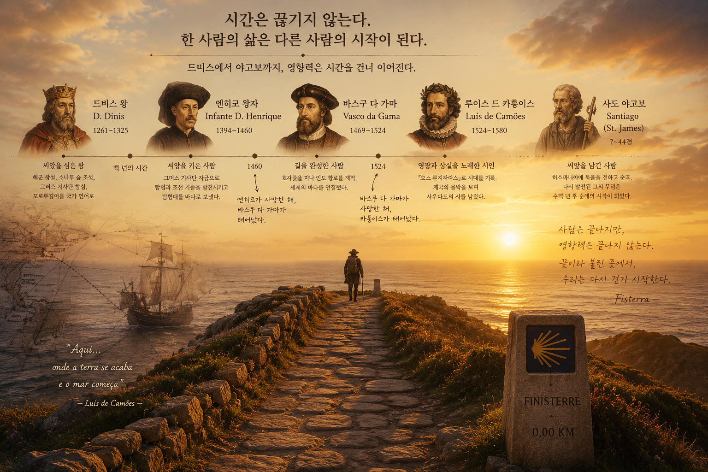

호카곶에 서면 가장 먼저 눈에 들어오는 것은 끝없이 펼쳐진 대서양입니다. 그러나 그 바다를 바라보고 있노라면, 문득 이런 생각이 듭니다. 이 거대한 항해는 과연 누구에게서 시작되었을까.
많은 사람은 엔히크 왕자나 바스쿠 다 가마를 떠올립니다. 하지만 시간을 조금 더 거슬러 올라가면, 그보다 백여 년 앞서 미래를 준비한 한 왕이 있었습니다. 바로 드니스 왕입니다.
드니스 왕은 직접 대양을 탐험한 인물이 아니었습니다. 대신 그는 탐험이 가능하도록 토양을 만들었습니다. 템플 기사단을 '그리스 기사단'으로 재편해 지식과 재정을 보존했고, 해군을 정비했으며, 레이리아에 소나무 숲을 조성해 미래의 선박을 위한 목재를 길렀습니다. 또한 라틴어 대신 포르투갈어를 공식 언어로 삼아 하나의 국가 정체성을 다져 놓았습니다.
백 년이 흐른 뒤, 그 씨앗은 엔히크 왕자의 시대에 꽃을 피웁니다. 그는 그리스 기사단의 자금과 드니스가 남긴 기반을 바탕으로 카라벨선을 개발하고 수많은 탐험대를 바다로 내보냈습니다. 드니스가 길을 준비했다면, 엔히크는 그 길에 돛을 올린 사람이었습니다.
그리고 마침내 바스쿠 다 가마가 그 항로를 완성합니다. 호카곶을 지나 희망봉을 돌아 인도에 이르는 항로를 개척하면서, 포르투갈은 세계를 연결하는 해양 제국으로 성장합니다. 호카곶은 더 이상 유럽의 끝이 아니라 새로운 세계를 향한 출발점이 되었습니다.

그러나 모든 영광은 오래 머물지 않았습니다. 바스쿠 다 가마가 세상을 떠난 해, 또 한 명의 인물이 세상에 태어났습니다. 바로 루이스 드 카몽이스입니다.
마치 한 사람이 내려놓은 시간이 다른 사람의 삶 속에서 다시 시작되는 것처럼 말입니다.
카몽이스는 제국이 가장 찬란했던 순간을 《루지아다스》에 담아냈지만, 그의 말년은 그 영광이 무너져 내리는 시간을 견뎌야 했습니다. 전투에서 한쪽 눈을 잃고, 난파선 속에서 원고를 품은 채 살아남았으며, 마침내 조국이 스페인에 병합되는 모습을 지켜본 뒤 가난과 병 속에서 생을 마감했습니다.
그의 시는 승리의 노래인 동시에 상실의 노래였습니다. 그래서 포르투갈 사람들은 '사우다드(Saudade)'라는 자신들만의 단어를 품게 되었는지도 모릅니다.
그것은 단순한 그리움이 아닙니다. 다시 만날 수 있을지조차 알 수 없는 존재를 기다리는 마음, 돌아오지 않을지도 모른다는 사실을 알면서도 끝내 희망을 놓지 못하는 마음입니다.
대항해시대는 수많은 사람에게 영광을 안겨 주었지만, 동시에 수많은 가족에게 끝없는 기다림을 남겼습니다. 호카곶 절벽에서 수평선을 바라보던 사람들의 마음은 세월이 흘러 하나의 민족 정서가 되었고, 카몽이스는 그 시간을 시 속에 영원히 새겨 놓았습니다.

그런데 이 거대한 역사에는 또 하나의 보이지 않는 연결이 숨어 있었습니다. 바스쿠 다 가마의 배에는 몇 달을 버틸 식량이 필요했고, 그 역할을 한 것이 말린 대구, 바칼라우였습니다.
그런데 그 대구는 포르투갈 바다가 아니라, 수천 킬로미터 떨어진 노르웨이 로포텐의 차가운 바다에서 왔습니다. 그건 소금과 대구를 맞바꾸는 것에서 시작되었습니다.

드니스가 심은 소나무는 배가 되었고, 엔히크는 그 배에 돛을 달았으며, 바스쿠 다 가마는 그 배를 타고 세상을 연결했습니다. 카몽이스는 그 시간을 시로 남겼고, 이름조차 남지 않은 북극의 어부들은 그 항해를 묵묵히 떠받쳤습니다.
그들은 서로 만난 적이 없었습니다. 같은 시대를 살지도 않았습니다. 그러나 시간이 그들을 하나의 이야기로 엮고 있었습니다.

그 순간 저는 깨달았습니다. 역사는 위대한 영웅 한 사람이 만들어 가는 것이 아니라, 수많은 사람이 자신의 자리에서 남긴 작은 흔적들이 시간을 건너 서로 이어질 때 비로소 완성된다는 것을.
누군가는 씨앗을 심고, 누군가는 돛을 올리며, 누군가는 바다를 건너고, 누군가는 그것을 노래로 남깁니다.
그리고 또 다른 누군가는, 이름 없이 그 모든 여정을 떠받칩니다. 어쩌면 여행도 이와 다르지 않은지 모릅니다.
우리는 새로운 풍경을 만나기 위해 길을 떠난다고 생각하지만, 어느 순간 깨닫게 됩니다. 내가 걷고 있는 길은 나 혼자 시작한 길이 아니라는 것을.
수많은 사람의 시간과 선택, 희생과 꿈이 겹겹이 쌓여 지금의 나에게 이어졌다는 것을. 그때 비로소 여행은 공간을 이동하는 일이 아니라, 시간을 건너 사람과 사람을 잇는 하나의 여정이 됩니다. 마치 실에 하나씩 꿰어진 구슬처럼 말입니다.
"그들은 서로 만난 적이 없었습니다.
같은 시대를 살지도 않았습니다.
그러나 시간이 그들을 하나의 이야기로 엮고 있었습니다."
구슬은 여행지이고, 실은 시간입니다. 그리고 그 목걸이를 완성하는 사람은 글을 쓴 사람이 아니고 마지막 장을 덮은 독자입니다.